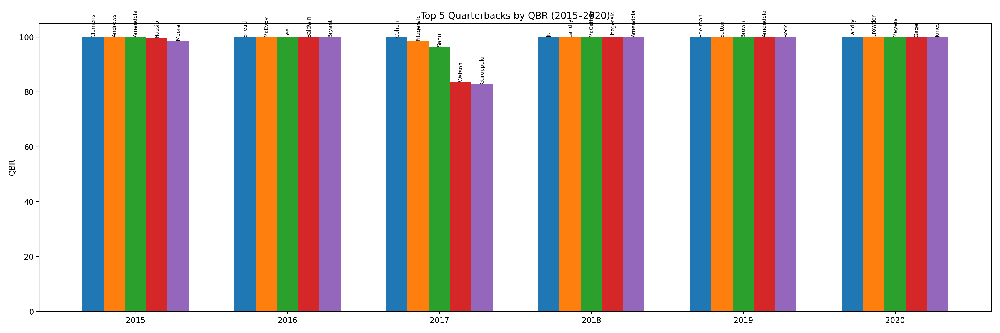
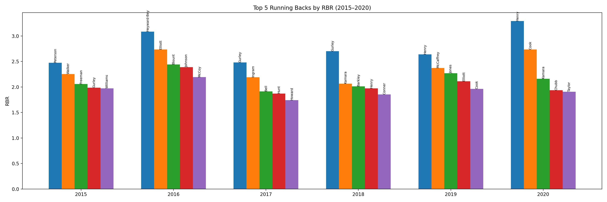
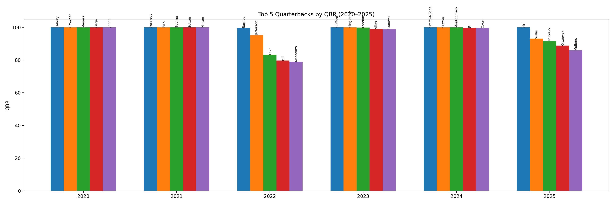

How the Metrics Work
Quarterback Rating (QBR)
Total Quarterback Rating (QBR) is ESPN’s comprehensive quarterback metric designed to measure a player’s overall contribution to winning. It is built on Expected Points Added (EPA) and incorporates passing, rushing, sacks, turnovers, and game context such as down, distance, score, time remaining, and opponent strength. QBR is reported on a 0–100 scale, where 50 represents league average performance.
Running Back Rating (RBR)
Running Back Rating (RBR) is a custom metric created for this project to evaluate running back performance in a consistent, data-driven way. It combines Success Rate, Yards per Attempt, Total Rushing Yards, and Total Touchdowns. Each component is normalized within a season and equally weighted to reflect both efficiency and workload.
Top Players by Year (2015–2020)
Quarterbacks (QBR)
Running Backs (RBR)
Top Players by Year (2020–2025)
Quarterbacks (QBR)
Running Backs (RBR)